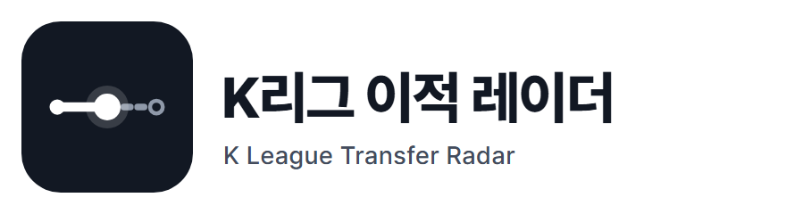
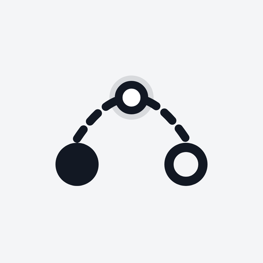
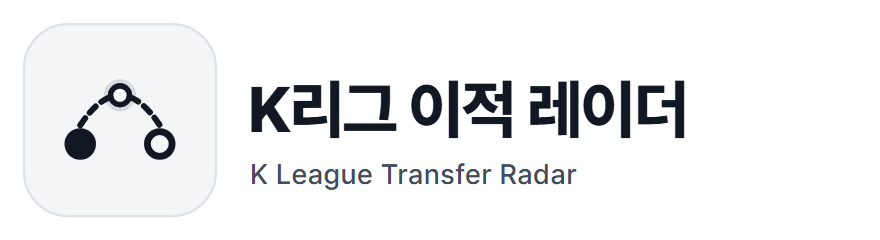
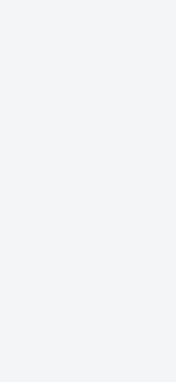
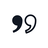
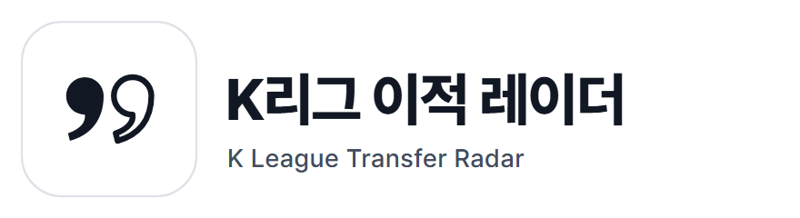

1 현재 위치조회 막대를 그대로 마크로 옮겼다. 지나온 구간은 실선, 큰 점이 지금 반영된 위치, 아직 오지 않은 구간은 점선과 빈 원이다. 화면의 막대와 같은 문법이라 처음 보는 사람도 앱 안에서 다시 만난다. 아이콘 원본 1024px 마스크와 작은 크기 (192px, 48px 실제 크기) 가로 로고 스플래시 GIF · 원본 애니메이션
2 이적 경로 선택두 구단 사이를 잇는 점선 호와 그 위의 현재 위치 점. 출발은 채운 원, 도착은 빈 원이다. 이적이라는 사건 자체를 그렸고, 구단 색 없이 잉크 한 색으로 어느 구단에도 치우치지 않는다. 아이콘 원본 1024px  마스크와 작은 크기 (192px, 48px 실제 크기) 가로 로고 스플래시 GIF · 원본 애니메이션
3 두 개의 따옴표출처의 말을 옮기는 따옴표 한 쌍. 채운 따옴표는 확인된 근거, 빈 따옴표는 아직 주장인 소식이다. '미래를 맞힌다'가 아니라 '누가 무엇을 말했는지 보여 준다'는 서비스 성격을 기호 하나로 담았다. 아이콘 원본 1024px  마스크와 작은 크기 (192px, 48px 실제 크기) 가로 로고 스플래시 GIF · 원본 애니메이션